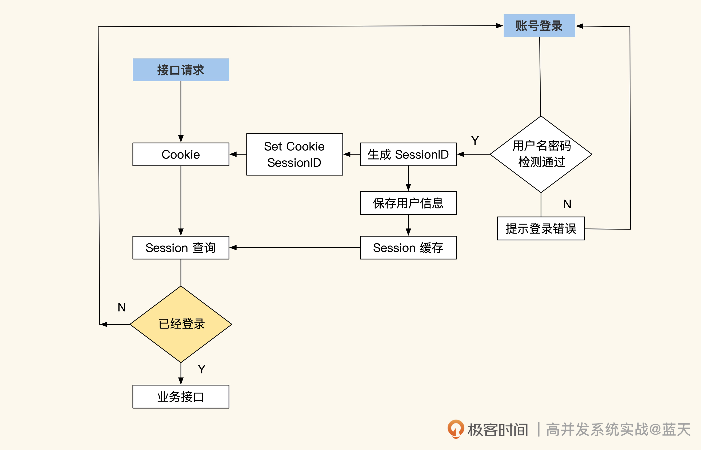
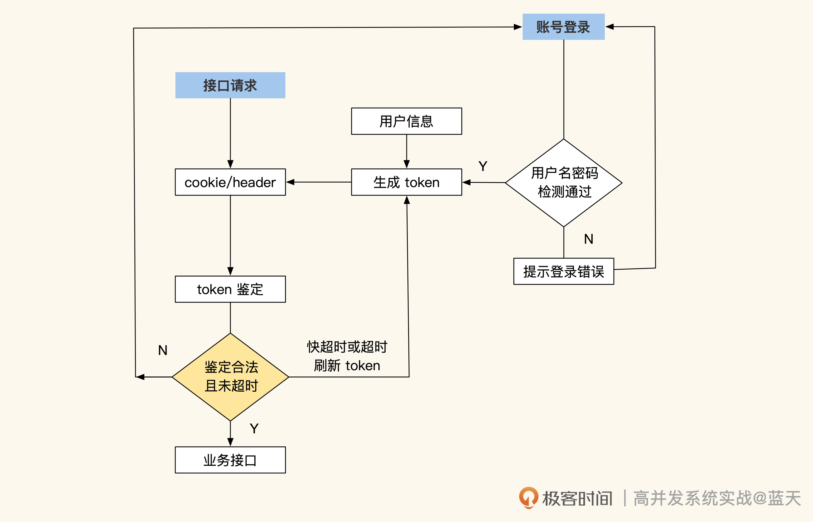
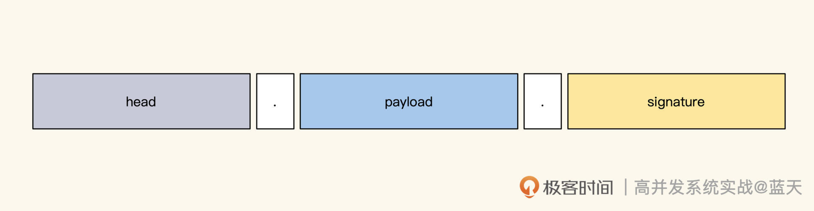
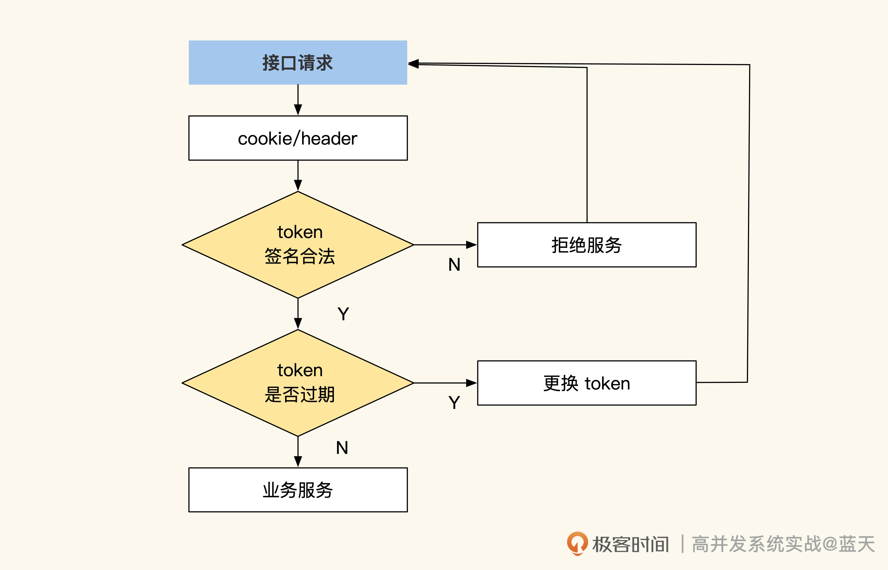
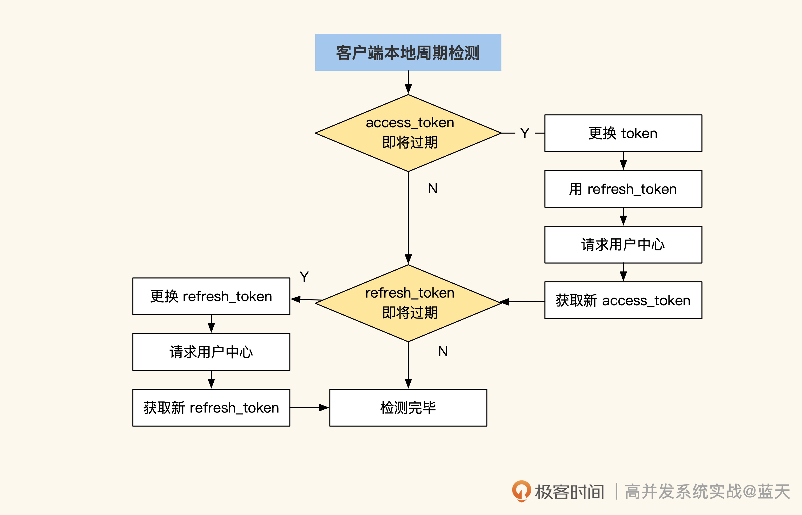

- 00 开篇词 高并发系统，技术实力的试金石.md.html
- 01 结构梳理：大并发下，你的数据库表可能成为性能隐患.md.html
- 02 缓存一致：读多写少时，如何解决数据更新缓存不同步？.md.html
- 03 Token：如何降低用户身份鉴权的流量压力？.md.html
- 04 同城双活：如何实现机房之间的数据同步？.md.html
- 05 共识Raft：如何保证多机房数据的一致性？.md.html
- 06 领域拆分：如何合理地拆分系统？.md.html
- 07 强一致锁：如何解决高并发下的库存争抢问题？.md.html
- 08 系统隔离：如何应对高并发流量冲击？.md.html
- 09 分布式事务：多服务的2PC、TCC都是怎么实现的？.md.html
- 10 稀疏索引：为什么高并发写不推荐关系数据库？.md.html
- 11 链路追踪：如何定制一个分布式链路跟踪系统 ？.md.html
- 12 引擎分片：Elasticsearch如何实现大数据检索？.md.html
- 13 实时统计：链路跟踪实时计算中的实用算法.md.html
- 14 跳数索引：后起新秀ClickHouse.md.html
- 15 实践方案：如何用C++自实现链路跟踪？.md.html
- 16 本地缓存：用本地缓存做服务会遇到哪些坑？.md.html
- 17 业务脚本：为什么说可编程订阅式缓存服务更有用？.md.html
- 18 流量拆分：如何通过架构设计缓解流量压力？.md.html
- 19 流量调度：DNS、全站加速及机房负载均衡.md.html
- 20 数据引擎：统一缓存数据平台.md.html
- 21 业务缓存：元数据服务如何实现？.md.html
- 22 存储成本：如何推算日志中心的实现成本？.md.html
- 23 网关编程：如何通过用户网关和缓存降低研发成本？.md.html
- 24 性能压测：压测不完善，效果减一半.md.html
- 答疑课堂 思考题答案（一）.md.html
- 结束语 为者常成，行者常至.md.html
- 捐赠
03 Token：如何降低用户身份鉴权的流量压力？
你好，我是徐长龙，这节课我们来看看如何用token算法降低用户中心的身份鉴权流量压力。
很多网站初期通常会用Session方式实现登录用户的用户鉴权，也就是在用户登录成功后，将这个用户的具体信息写在服务端的Session缓存中，并分配一个session_id保存在用户的Cookie中。该用户的每次请求时候都会带上这个ID，通过ID可以获取到登录时写入服务端Session缓存中的记录。
流程图如下所示：

这种方式的好处在于信息都在服务端储存，对客户端不暴露任何用户敏感的数据信息，并且每个登录用户都有共享的缓存空间（Session Cache）。
但是随着流量的增长，这个设计也暴露出很大的问题——用户中心的身份鉴权在大流量下很不稳定。因为用户中心需要维护的Session Cache空间很大，并且被各个业务频繁访问，那么缓存一旦出现故障，就会导致所有的子系统无法确认用户身份，进而无法正常对外服务。
这主要是由于Session Cache和各个子系统的耦合极高，全站的请求都会对这个缓存至少访问一次，这就导致缓存的内容长度和响应速度，直接决定了全站的QPS上限，让整个系统的隔离性很差，各子系统间极易相互影响。
那么，如何降低用户中心与各个子系统间的耦合度，提高系统的性能呢？我们一起来看看。
JWT登陆和token校验
常见方式是采用签名加密的token，这是登录的一个行业标准，即JWT（JSON Web Token）：
上图就是JWT的登陆流程，用户登录后会将用户信息放到一个加密签名的token中，每次请求都把这个串放到header或cookie内带到服务端，服务端直接将这个token解开即可直接获取到用户的信息，无需和用户中心做任何交互请求。
token生成代码如下：
import "github.com/dgrijalva/jwt-go"
//签名所需混淆密钥 不要太简单 容易被破解
//也可以使用非对称加密，这样可以在客户端用公钥验签
var secretString = []byte("jwt secret string 137 rick")
type TokenPayLoad struct {
UserId uint64 `json:"userId"` //用户id
NickName string `json:"nickname"` //昵称
jwt.StandardClaims //私有部分
}
// 生成JWT token
func GenToken(userId uint64, nickname string) (string, error) {
c := TokenPayLoad{
UserId: userId, //uid
NickName: nickname, //昵称
//这里可以追加一些其他加密的数据进来
//不要明文放敏感信息，如果需要放，必须再加密
//私有部分
StandardClaims: jwt.StandardClaims{
//两小时后失效
ExpiresAt: time.Now().Add(2 * time.Hour).Unix(),
//颁发者
Issuer: "geekbang",
},
}
//创建签名 使用hs256
token := jwt.NewWithClaims(jwt.SigningMethodHS256, c)
// 签名，获取token结果
return token.SignedString(secretString)
}
可以看到，这个token内部包含过期时间，快过期的token会在客户端自动和服务端通讯更换，这种方式可以大幅提高截取客户端token并伪造用户身份的难度。
同时，服务端也可以和用户中心解耦，业务服务端直接解析请求带来的token即可获取用户信息，无需每次请求都去用户中心获取。而token的刷新可以完全由App客户端主动请求用户中心来完成，而不再需要业务服务端业务请求用户中心去更换。
JWT是如何保证数据不会被篡改，并且保证数据的完整性呢，我们先看看它的组成。

如上图所示，加密签名的token分为三个部分，彼此之间用点来分割，其中，Header用来保存加密算法类型；PayLoad是我们自定义的内容；Signature是防篡改签名。
JWT token解密后的数据结构如下图所示：
//header
//加密头
{
"alg": "HS256", // 加密算法，注意检测个别攻击会在这里设置为none绕过签名
"typ": "JWT" //协议类型
}
//PAYLOAD
//负载部分，存在JWT标准字段及我们自定义的数据字段
{
"userid": "9527", //我们放的一些明文信息，如果涉及敏感信息，建议再次加密
"nickname": "Rick.Xu", // 我们放的一些明文信息，如果涉及隐私，建议再次加密
"iss": "geekbang",
"iat": 1516239022, //token发放时间
"exp": 1516246222, //token过期时间
}
//签名
//签名用于鉴定上两段内容是否被篡改，如果篡改那么签名会发生变化
//校验时会对不上
JWT如何验证token是否有效，还有token是否过期、是否合法，具体方法如下：
func DecodeToken(token string) (*TokenPayLoad, error) {
token, err := jwt.ParseWithClaims(token, &TokenPayLoad{}, func(tk *jwt.Token) (interface{}, error) {
return secret, nil
})
if err != nil {
return nil, err
}
if decodeToken, ok := token.Claims.(*TokenPayLoad); ok && token.Valid {
return decodeToken, nil
}
return nil, errors.New("token wrong")
}
JWT的token解密很简单，第一段和第二段都是通过base64编码的。直接解开这两段数据就可以拿到payload中所有的数据，其中包括用户昵称、uid、用户权限和token过期时间。要验证token是否过期，只需将其中的过期时间和本地时间对比一下，就能确认当前token是不是有效。
而验证token是否合法则是通过签名验证完成的，任何信息修改都会无法通过签名验证。要是通过了签名验证，就表明token没有被篡改过，是一个合法的token，可以直接使用。
这个过程如下图所示：- 
我们可以看到，通过token方式，用户中心压力最大的接口可以下线了，每个业务的服务端只要解开token验证其合法性，就可以拿到用户信息。不过这种方式也有缺点，就是用户如果被拉黑，客户端最快也要在token过期后才能退出登陆，这让我们的管理存在一定的延迟。
如果我们希望对用户进行实时管理，可以把新生成的token在服务端暂存一份，每次用户请求就和缓存中的token对比一下，但这样很影响性能，极少数公司会这么做。同时，为了提高JWT系统的安全性，token一般会设置较短的过期时间，通常是十五分钟左右，过期后客户端会自动更换token。
token的更换和离线
那么如何对JWT的token进行更换和离线验签呢？
具体的服务端换签很简单，只要客户端检测到当前的token快过期了，就主动请求用户中心更换token接口，重新生成一个离当前还有十五分钟超时的token。
但是期间如果超过十五分钟还没换到，就会导致客户端登录失败。为了减少这类问题，同时保证客户端长时间离线仍能正常工作，行业内普遍使用双token方式，具体你可以看看后面的流程图：

可以看到，这个方案里有两种token：一种是refresh_token，用于更换access_token，有效期是30天；另一种是access_token，用于保存当前用户信息和权限信息，每隔15分钟更换一次。如果请求用户中心失败，并且App处于离线状态，只要检测到本地refresh_token没有过期，系统仍可以继续工作，直到refresh_token过期为止，然后提示用户重新登陆。这样即使用户中心坏掉了，业务也能正常运转一段时间。
用户中心检测更换token的实现如下：
//如果还有五分钟token要过期，那么换token
if decodeToken.StandardClaims.ExpiresAt < TimestampNow() - 300 {
//请求下用户中心，问问这个人禁登陆没
//....略具体
//重新发放token
token, err := GenToken(.....)
if err != nil {
return nil, err
}
//更新返回cookie中token
resp.setCookie("xxxx", token)
}
这段代码只是对当前的token做了超时更换。JWT对离线App端十分友好，因为App可以将它保存在本地，在使用用户信息时直接从本地解析出来即可。
安全建议
最后我再啰嗦几句，除了上述代码中的注释外，在使用JWT方案的时候还有一些关键的注意事项，这里分享给你。
第一，通讯过程必须使用HTTPS协议，这样才可以降低被拦截的可能。
第二，要注意限制token的更换次数，并定期刷新token，比如用户的access_token每天只能更换50次，超过了就要求用户重新登陆，同时token每隔15分钟更换一次。这样可以降低token被盗取后给用户带来的影响。
第三，Web用户的token保存在cookie中时，建议加上httponly、SameSite=Strict限制，以防止cookie被一些特殊脚本偷走。
总结
传统的Session方式是把用户的登录信息通过SessionID统一缓存到服务端中，客户端和子系统每次请求都需要到用户中心去“提取”，这就会导致用户中心的流量很大，所有业务都很依赖用户中心。
为了降低用户中心的流量压力，同时让各个子系统与用户中心脱耦，我们采用信任“签名”的token，把用户信息加密发放到客户端，让客户端本地拥有这些信息。而子系统只需通过签名算法对token进行验证，就能获取到用户信息。
这种方式的核心是把用户信息放在服务端外做传递和维护，以此解决用户中心的流量性能瓶颈。此外，通过定期更换token，用户中心还拥有一定的用户控制能力，也加大了破解难度，可谓一举多得。
其实，还有很多类似的设计简化系统压力，比如文件crc32校验签名可以帮我们确认文件在传输过程中是否损坏；通过Bloom Filter可以确认某个key是否存在于某个数据集合文件中等等，这些都可以大大提高系统的工作效率，减少系统的交互压力。这些技巧在硬件能力腾飞的阶段，仍旧适用。
思考题
用户如果更换了昵称，如何快速更换token中保存的用户昵称呢？
欢迎你在留言区与我交流讨论，我们下节课见！
© 2019 - 2023 Liangliang Lee. Powered by gin and hexo-theme-book.